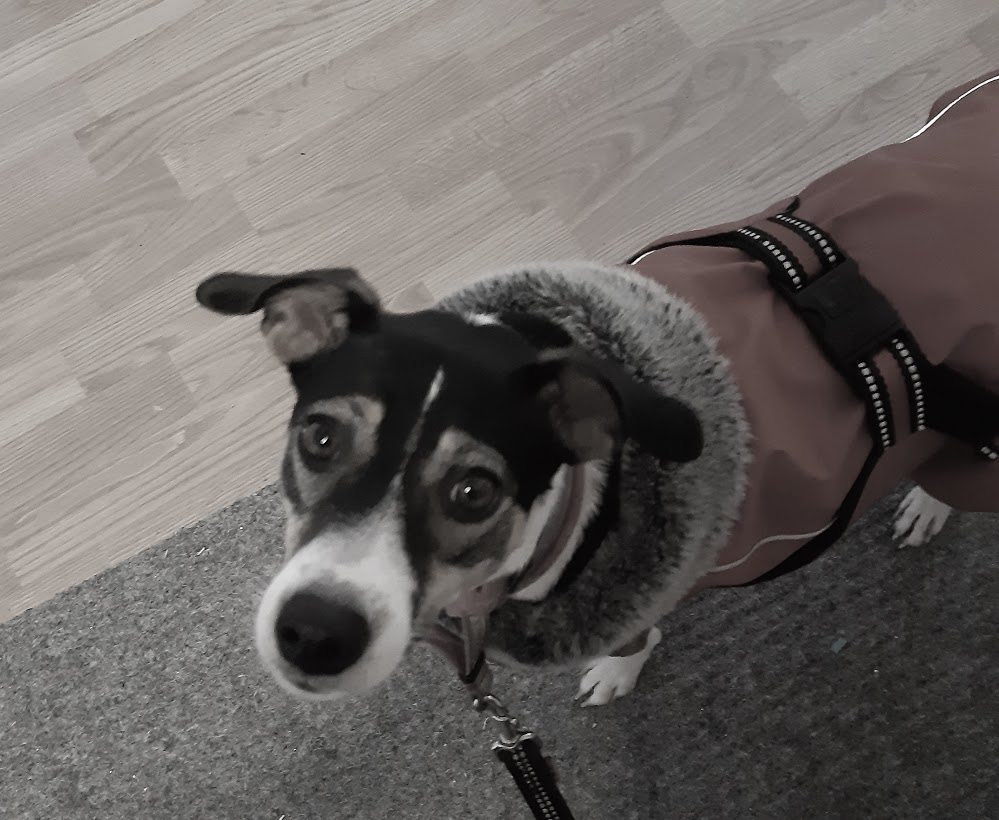

Koirat
Koirani ovat nimeltään Libby ja Wanda. He ovat espanjalaisia kodittomia koiria ja heidät on tuotu Suomeen Autetaan eläimiä ry:n kautta.
Libby
Libby on 3 -vuotias poneco mix. Libby saapui Suomeen neljän kuukauden ikäisenä Autetaan eläimiä ry:n kautta. Hän on perheen prinsessa. Ylväs käytökseltään ja ulkonäöltään. Libby vihaa vettä ja kastumista paitsi jos veteen heitetään pallo. Pallon perässä Libby menee minne vain!

Wanda
Wanda on pullea pieni koira. Ulkonäkö hämää koska sisältä hän on tulta ja tappuraa varsinkin jos kyse on herkuista tai perheen puolustamisesta. Wanda rakastaa rapsutuksia ja ruokaa. Kun hän päättää että olet kiva, hän näyttää sen ylenpalttisilla suudelmilla ja niin isolla hännän heilutuksella että koko koira menee mutkalle.
